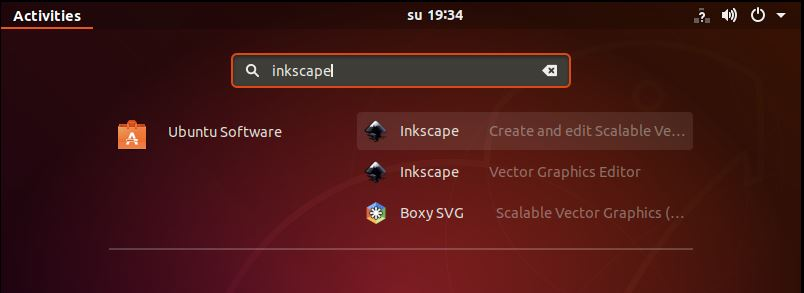
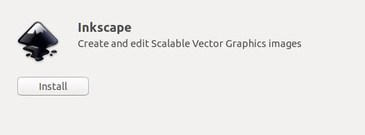
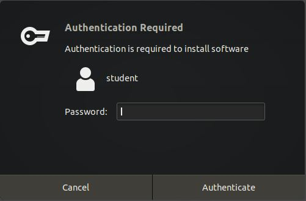
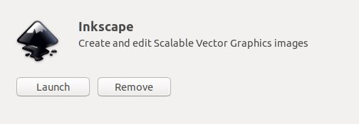
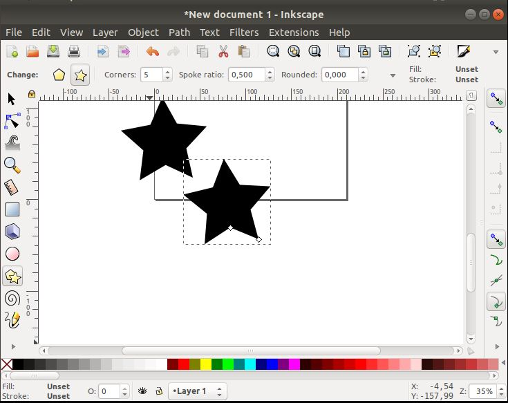

Inkscape on avoimeen lähdekoodiin perustuva ohjelmisto vektorigrafiikan tuottamiseen. Siitä pyritään tekemään täysin yhteensopiva XML-, SVG- ja CSS-standardien kanssa. Ohjelma toimii Windowsilla sekä Linuxilla, macOS:llä ja muilla Unixin kaltaisilla käyttöjärjestelmillä.
1. Aloita klikkaamalla ruudun vasemmasta alanurkasta "Show applications", ja kirjoita hakuun "inkscape".
Listasta tulisi löytyä Inkscape. Valitse ohjelma listasta.

2. Klikkaa"Install", ja asennuksen tulisi kestää korkeintaan muutaman minuuutin.

3. Tämän jälkeen sinulta kysytään käyttäjäsi salasanaa, jotta asennus voidaan vahvistaa.

4. Kun ohjelma on asennettu, voit käynnistää sen klikkaamalla "Launch".

5. Ohjelma käynnistyy ja on valmis käytettäväksi.
